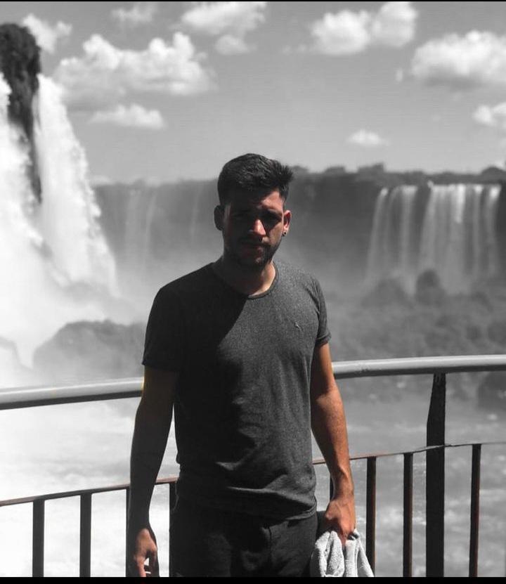
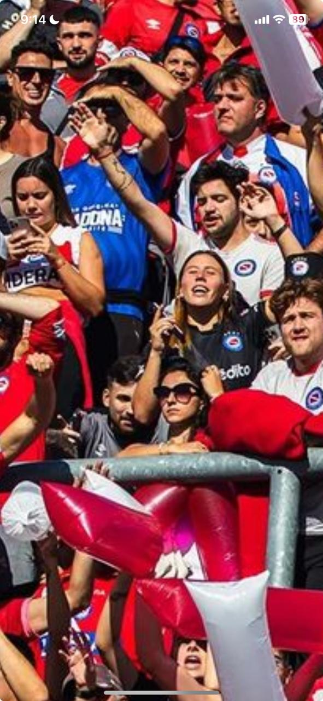

Mi nombre es Nahuel,Tengo 27 años y vivo en el barrio de Paternal, Buenos Aires. Casado y padre orgulloso de un hijo de 8 meses, mi vida gira en torno a mi familia y mi trabajo en un comercio familiar. Cuando no estoy dedicado a mis responsabilidades, disfruto de mi pasión por el fútbol, apoyando al equipo de mis amores, Argentinos Juniors, y también me encanta relajarme aprendiendo en la computadora. Para mí, cada día es una oportunidad para encontrar el equilibrio entre el deber y el placer.
 